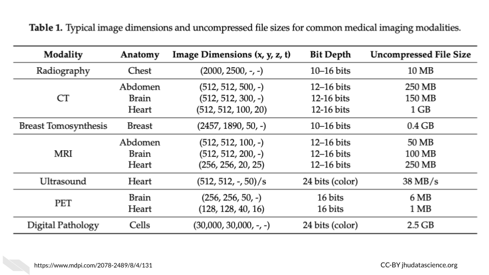
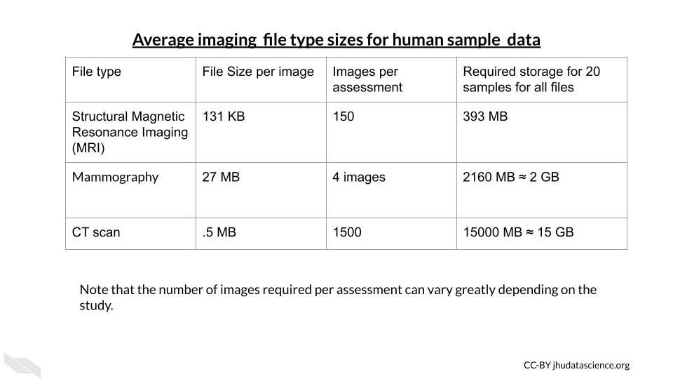
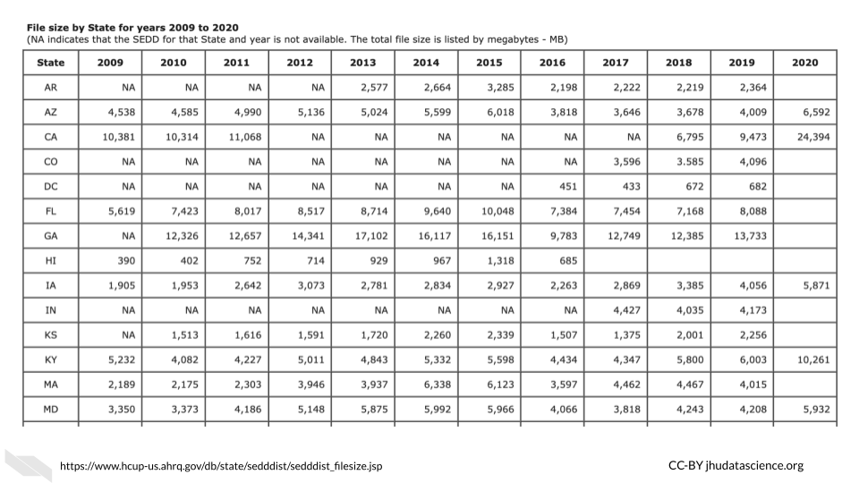

Data File Size Details
Here you can find more specific information about the file sizes for the types of data commonly generated at Fred Hutch. If you’d like to learn more about the basics of data sizes and computing capacity, please take a look at this class on Computing for Cancer Informatics from the Informatics Technology for Cancer Research (ITCR) Training Network (ITN).
Genomics Data
Matt Fitzgibbon and Andy Marty from Genomics Shared Resources have put together a table of file sizes generated by common genomics assays done at Fred Hutch. These estimates are only approximate, as the actual file sizes can vary considerably. Per-samples sizes are averaged from samples of at least three representative runs of the given type (except for 10x Multiome where two runs were checked).
| Assay | File Type | Per-sample Size | Per-run Size | Public Repository | Private Repository | Notes |
|---|---|---|---|---|---|---|
| Bulk RNA-seq | Paired Fastq | 2-4G | highly variable | GEO/SRA | dbGaP/SRA | Depends on library prep & goals |
| RNA Exome | Paired Fastq | 3G | highly variable | GEO/SRA | dbGaP/SRA | |
| Whole Exome | Paired Fastq | 3G | highly variable | GEO/SRA | dbGaP/SRA | HS platform dependent |
| CRISPR | Single Fastq | ≥500M | highly variable | GEO/SRA | dbGaP/SRA | sgRNA library dependent |
| CUT&RUN | Paired Fastq | ≥500M | highly variable | GEO/SRA | dbGaP/SRA | Ab dependent |
| CUT&Tag | Paired Fastq | ≥500M | highly variable | GEO/SRA | dbGaP/SRA | Ab dependent |
| ChIP-seq | Fastq | 0.5-5G | highly variable | GEO/SRA | dbGaP/SRA | Ab dependent |
| ATAC-seq | Fastq | 3-5G | highly variable | GEO/SRA | dbGaP/SRA | |
| 10x scRNA-seq | Paired Fastq | 10G | highly variable | GEO/SRA | dbGaP/SRA | Target cell number dependent |
| 10x Multiome | Paired Fastq | ≥20G | highly variable | GEO/SRA | dbGaP/SRA | Target nuclei number dependent |
| 10x Visium | Paired Fastq | ≥5G | highly variable | GEO/SRA | dbGaP/SRA | Spots under tissue dependent |
| Small Genome | Paired Fastq | ≥2G | highly variable | GEO/SRA | N/A | Genome size dependent |
| PacBio Amplicon | CCS BAM | 0.5-20G | highly variable | GEO/SRA | N/A | Amplicon size & target depth dependent |
| PacBio Small Genome | CCS BAM | highly variable | highly variable | GEO/SRA | N/A | Genome size dependent |
Imaging Data
File sizes for medical imaging data vary greatly depending on both the technology used and the organ being imaged. These are some general estimates you can use as a guideline when considering your data management and storage needs. These tables are borrowed from the ITN Computing for Cancer Informatics Course.
Here is an table of average file sizes for various medical imaging modalities from Liu et al. (2017):
 [source]
Note that depending on the study requirements, several images may be needed for each sample. Thus data storage needs can add up quickly.
 [source]
Clinical Data
This information is borrowed from the ITN Computing for Cancer Informatics Course.
Really large clinical datasets can also produce sizable file sizes. For example the Healthcare Cost and Utilization Project (HCUP) National (Nationwide) Inpatient Sample (NIS) contains data on more than seven million hospital stays in the United States with regional information.
According to the NIS website it “enables analyses of rare conditions, uncommon treatments, and special populations” (“NIS Database Documentation” n.d.).
Looking at the file sizes for the NIS data for different states across years, you can see that there are files for some states, such as California as large as 24,000 MB or 2.4 GB (“NIS Database Documentation” n.d.). You can see how this could add up across years and states quite quickly.
